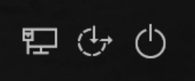
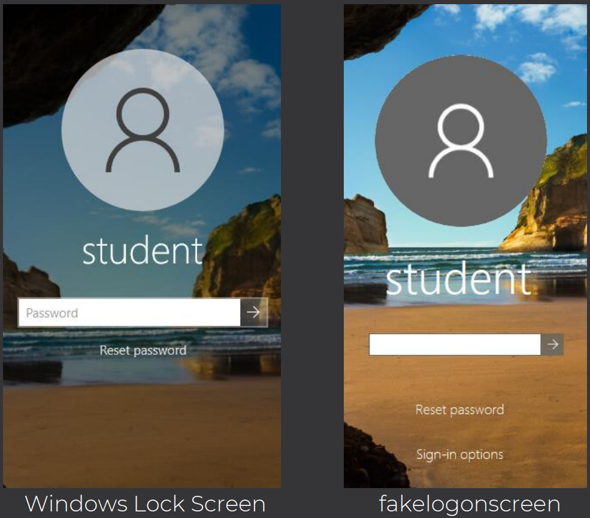

Description
Created by Arris Huijgen @bitsadmin
Current Version 1.1, Last Updated 02/03/2020
Built using .NET framework which is installed by default in Windows 8, 8.1 and 10.
This tool takes advantage of the normal behavior of a Windows Lock Screen
feature to phish out the victim’s password.
Two Executables:
- FakeLogonScreen.exe – write output to console (used for
remote execution)
- FakeLogonScreenToFile.exe – writes output to console as well as %LocalAppData%\Microsoft\user.db
Installation and Execution
Developed by Charles Bennett and Gilles Brassard in 1984, it is the first quantum cryptography
protocol and is provably secure. To maintain its security, it relies on two principles of quantum
mechanics:
- Go to the github releases page for this tool: bitsadmin/fakelogonscreen
- Download fakelogonscreen_trunk.zip file (73.2 kb).
- Unzip the tool, to get the executables.
Note: Window’s Defender flags the zip file because it detects
MSIL/Deismos.A!MTB. So, disabling Window’s Defender or allowing the threat is
required.
- The executable displays a lock screen when run, forcing the victim to enter
the correct credentials to get access back to their machine.
- Validates the password against Active Directory or the local machine.
- The credentials are then saved locally or sent to a remote machine.
Note: Since, the executable is not verified, Windows also shows a warning on
running the executable locally.
Features
- Minimizes all other windows, and blackens any additional displays, showing
only the lock screen, it also uses the ‘Always On Top’ setting so it cannot be
moved to the background.
- In case of a custom background, it displays that background instead of the
default one.
- Blocks many shortcut keys to prevent circumventing the screen.
- Validates the entered password before closing the screen.
Detection and Bypass
There are a couple ways, we can detect whether this executable is running or not.
- Internet, Ease of Access and Power Buttons are absent.

- The Reset Password initially does not show up, and even after repeated failed password logging attempts, for local machines, “Sign-in options” is never present.
- Can be bypassed using Ctrl + Alt + Delete and then opening task manager.
